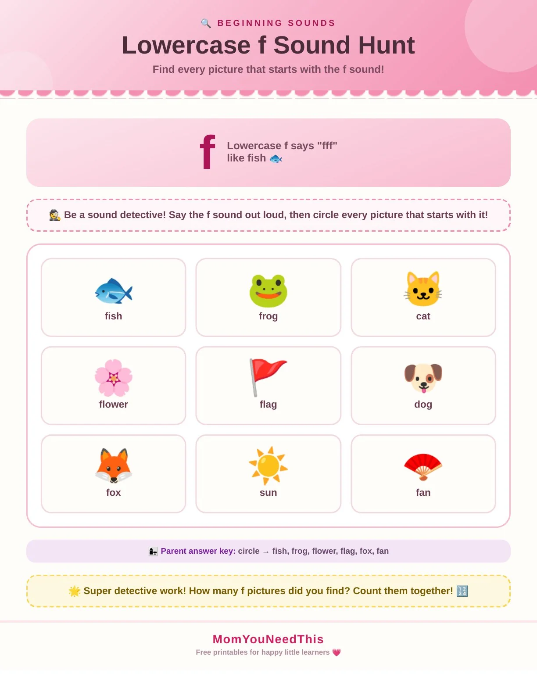

Lowercase f Sound Practice Recognize The Lowercase f And Its Sound
Most of the letters children see in books are lowercase! This printable helps your little learner recognize the lowercase f — the tall letter — and connect it to its blowing /f/ sound.
Quick Answer
This free printable helps preschoolers connect the lowercase letter f with its beginning sound — /f/, the blowing sound in fish, frog and flower. Children hunt for the letter f among other letters and circle every one they find, building phonemic awareness and letter recognition. Designed for ages 3-5. Download and print at home with no signup needed.
At a Glance
- Ages: Preschoolers (ages 3–5)
- Activity: Hunting lowercase f and its /f/ sound — fish, frog, flower
- Skills: Lowercase recognition and beginning sounds
- Format: Printable worksheet (PDF)
- Cost: Free, no signup
🐟 Fish
🐸 Frog
🌸 Flower

🔡 Find The Lowercase f
Point to the lowercase f together and say its sound. Then find every f hiding among the other letters and circle it. Small f stands taller than its neighbours — look for the tall hook poking up above the rest of the row.
⬇️ Download Free Printable 🖨️ Print🎁 Free printable for toddlers & preschoolers
📖 Spot It In Books
After the printable, hunt for the letter f in a favorite picture book. Words like fish, frog and flower begin with the f sound — and f hides inside words too, like leaf, and twice in giraffe.
🤝 Pair Uppercase And Lowercase
Show how big F and little f are the same letter — and be honest: this pair looks quite different. Capital F is all straight lines and bars, while small f is a tall hook with a cross. Children learn this pair as two separate shapes, and matching them builds strong letter knowledge.
🎨 Keep Exploring Free Letter Activities
More alphabet learning activities are added regularly for toddlers and preschoolers.
🎁 View All Free Resources🔊 The f Sound
The f sound is made with the top teeth resting lightly on the bottom lip while air blows through: /f/. It is a wind sound — one of the few sounds you can hold for as long as your breath lasts: ffffish, ffffrog.
F begins fish, frog and flower on this page, and plenty more besides: fox, flag, fan and fork. It also ends words — listen for it at the end of leaf and giraffe — and doubles up inside giraffe and off.
Each f your child circles is practice in spotting the tallest letter on the line — a shape that stands out in every book once you know it.
🖨️ How to Use This Printable
Get started in minutes — everything here is free and made for busy parents.
- Download the printable. Tap the download button to save the free Free Lowercase f Sound Practice file to your device.
- Print it out. Use any home printer and regular paper — cardstock works great for pages little hands will use again and again. The print button opens the full-size page in a new tab if you prefer to print from there.
- Learn together. Sit with your child and blow out the sound — ffff — each time an f is found. It is one of the few sounds you can hold as long as your breath lasts. Short sessions work best.
- Explore more. Check the free printables linked below for your next activity.
❓ Free Lowercase f Sound Practice FAQs
Is this Free Lowercase f Sound Practice printable free?
Yes — every printable on MomYouNeedThis is 100% free to download and print. No signup, no payment, just tap the download button and print fresh copies of the f page whenever your child wants another hunt.
How do I use this lowercase f sound printable?
Print the page and work through it together: name the letter f, make its /f/ sound like the start of fish, and circle every f hiding among the other letters. Short, playful sessions work better than long lessons for little learners.
What literacy skills does this practice?
Letter recognition, beginning sounds, and print awareness. The letter f also teaches something special about sounds: /f/ is a wind sound you can stretch out — ffffish — unlike pop sounds like b, which helps children hear where a word begins. These are the core pre-reading skills that prepare children for phonics and reading.
🔗 More Free Printables You’ll Love
Pair this printable with more free learning activities from the MomYouNeedThis library.
- 🔊 Free Uppercase Letter F Sound PracticeFree printable uppercase letter f sound practice for little learners.
- 🔊 Free Lowercase Letter B Sound PracticeFree printable lowercase letter b sound practice for little learners.
- 🔊 Free Lowercase Letter C Sound PracticeFree printable lowercase letter c sound practice for little learners.
- 🔎 Free Find Letter F SoundFree printable find letter f sound practice for little learners.